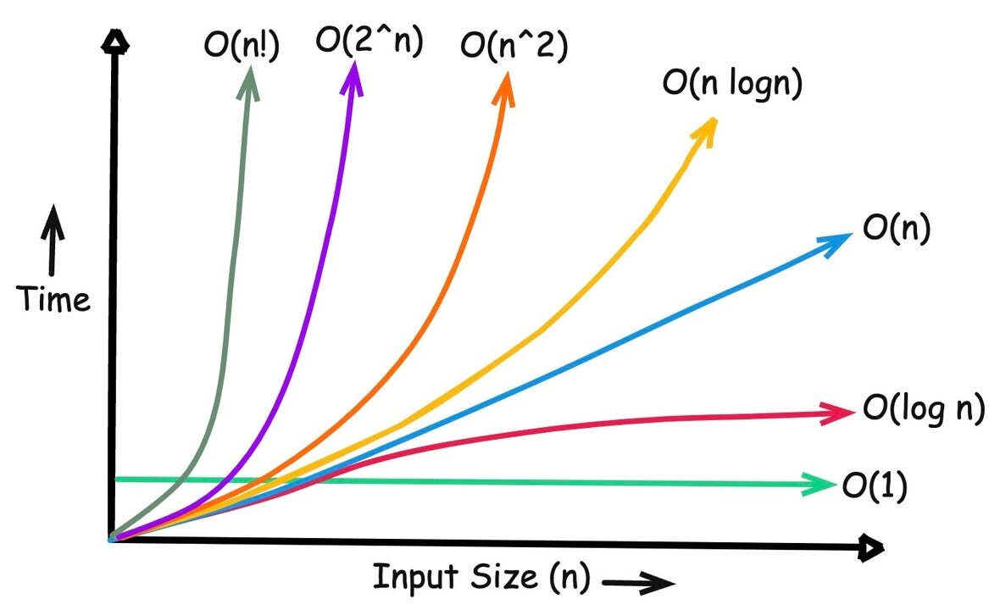

flowchart LR
RDI("Raw Data Input")
DS["Data Structures<br>How Data is Stored"]
AL["Algorithm<br>The Step-by-Step Logic"]
OS("Optimal Solution")
RDI --> DS --> AL --> OS
I. Intro: The Big Picture View: What is DS & A?
Every software problem boils down to 2 aspects:
- Data Structures - “The Containers”
- How you organize and store data in memory (e.g.: Arrays, Hash Maps, Trees)
- Algorithms - *“The Recipes”
- The step-by-step instructions used to manipulate that data and solve a problem
Contents of the blog in 1 Pic:
flowchart LR
%% Left Subgraph: Algorithm Patterns
subgraph PAT ["Algorithm Patterns"]
direction TB
Start{"What kind of<br>problem is it?"}
Start -->|"Sorted Array<br>/ Pairs"| TP["Two Pointers<br>Pattern"]
Start -->|"Contiguous<br>Subarray"| SW["Sliding Window<br>Pattern"]
Start -->|"Fast Counting<br>/ Duplicates"| HM["Hash Map<br>Frequency Pattern"]
Start -->|"Sorted Data /<br>Search Space"| BS["Binary Search<br>Pattern"]
Start -->|"Shortest Path /<br>Level-by-Level"| BFS["Breadth-First<br>Search (BFS)"]
Start -->|"All Combinations<br>/ Paths"| DFS["Depth-First<br>Search<br>/ Backtracking"]
end
%% Right Subgraph: Core Data Structures (Unlinked)
subgraph DS ["Core Data<br>Structures"]
direction TB
A["1. Arrays & Strings<br><br>Contiguous memory,<br>index-based"]
B["2. Hash Maps & Sets<br><br>Key-value pairs,<br>O(1) instant<br>lookups"]
C["3. Linked Lists<br><br>Nodes connected<br>via pointers"]
D["4. Stacks & Queues<br><br>LIFO vs.<br>FIFO ordering"]
E["5. Trees & Graphs<br><br>Hierarchical &<br>networked data"]
end
%% Connections: Patterns -> Data Structures
TP -->|"uses"| A
TP --> |"uses"| C
SW -->|"uses"| A
SW --> |"uses"| B
HM -->|"uses"| B
BS -->|"uses"| A
BFS -->|"uses Queue<br>(FIFO)"| D
BFS -->|"traverses"| E
DFS -->|"uses Stack /<br>Recursion"| D
DFS -->|"traverses"| E
%% Styling Patterns
style PAT fill:#f8fafc,stroke:#94a3b8,stroke-width:2px
style Start fill:#1e293b,color:#ffffff,stroke:#0f172a
style TP fill:#dbeafe,stroke:#2563eb,stroke-width:2px
style SW fill:#e0e7ff,stroke:#4f46e5,stroke-width:2px
style HM fill:#dcfce7,stroke:#16a34a,stroke-width:2px
style BS fill:#fef9c3,stroke:#ca8a04,stroke-width:2px
style BFS fill:#fae8ff,stroke:#a21caf,stroke-width:2px
style DFS fill:#ffe4e6,stroke:#e11d48,stroke-width:2px
%% Styling Data Structures
style DS fill:#f8fafc,stroke:#94a3b8,stroke-width:2px
style A fill:#f0fdf4,stroke:#16a34a,stroke-width:2px
style B fill:#eff6ff,stroke:#2563eb,stroke-width:2px
style C fill:#fefce8,stroke:#ca8a04,stroke-width:2px
style D fill:#faf5ff,stroke:#9333ea,stroke-width:2px
style E fill:#fff1f2,stroke:#e11d48,stroke-width:2px
2. Measuring Efficiency via Big-O Notation
Big O Notation measures how the runtime or memory of your algorithm grows as the input size (\(N\)) grows.
| Big O | Name | Intuition | Example |
|---|---|---|---|
| \(O(1)\) | Constant | Instant lookup regardless of data size. | Accessing an array element by index (arr[0]). |
| \(O(\log N)\) | Logarithmic | Cuts the problem size in half every step. | Binary Search in a sorted list. |
| \(O(N)\) | Linear | Visits each element once. | Looping through an array to find the max value. |
| \(O(N \log N)\) | Linearithmic | Efficient sorting speed. | Merge Sort, Quick Sort (sorted()). |
| \(O(N^2)\) | Quadratic | Nested loops (comparing every item to every other item). | Checking all pairs in a list (usually too slow for interviews). |

3. Data Structures
3.1. Arrays & Strings (Contiguous Memory)
An Array (a list in Python) stores elements side-by-side in adjacent memory slots, allowing instant \(O(1)\) access by index. However, inserting or deleting in the middle requires shifting subsequent elements (\(O(N)\)). A String behaves identically, except it is immutable.
Visualizing Memory Layout & Shifting
flowchart LR
subgraph Mem ["Contiguous Memory (Instant O(1) Lookup via Index)"]
direction LR
I0["Index 0<br><b>10</b>"] --- I1["Index 1<br><b>20</b>"] --- I2["Index 2<br><b>30</b>"] --- I3["Index 3<br><b>40</b>"]
end
Insert(["Insert <b>99</b><br>at Index 1"]) -.->|"Forces Shift →<br>O(N) Cost"| I1
style Mem fill:#f0fdf4,stroke:#16a34a,stroke-width:2px
style I0 fill:#ffffff,stroke:#16a34a
style I1 fill:#dcfce7,stroke:#16a34a,stroke-width:2px
style I2 fill:#ffffff,stroke:#16a34a
style I3 fill:#ffffff,stroke:#16a34a
style Insert fill:#fef9c3,stroke:#ca8a04,stroke-width:2px
Concrete Example
arr = [10, 20, 30, 40]
# 1. Instant Read by Index -> O(1)
print(arr[2]) # Output: 30
# 2. Append to the very end -> O(1) amortized
arr.append(50) # [10, 20, 30, 40, 50]
# 3. Insert in the middle -> O(N) because 20, 30, 40, 50 must shift right
arr.insert(1, 99) # [10, 99, 20, 30, 40, 50]3.2. Hash Maps & Sets (Instant Key-Value Lookups)
A Hash Map (Python dict) passes a key through a hash function to compute an exact memory address. This gives \(O(1)\) average time for lookups, insertions, and deletions—eliminating the need to scan through items one by one. A Hash Set (set) is simply a Hash Map that stores only keys (no values) to enforce uniqueness.
Visualizing the Hashing Pipeline
flowchart LR
K1(["Key: 'apple'"]) --> HF["Hash Function<br>hash('apple') % size"]
K2(["Key: 'banana'"]) --> HF
subgraph Table ["Hash Table Buckets (O(1) Direct Jump)"]
direction TB
B0["Bucket 0: empty"]
B1["Bucket 1: 'apple' → $1.20"]
B2["Bucket 2: 'banana' → $0.50"]
end
HF -->|"Index 1"| B1
HF -->|"Index 2"| B2
style Table fill:#eff6ff,stroke:#2563eb,stroke-width:2px
style HF fill:#dbeafe,stroke:#2563eb,stroke-width:2px
style B1 fill:#ffffff,stroke:#2563eb
style B2 fill:#ffffff,stroke:#2563eb
Concrete Example
# Hash Map (Dictionary): Key -> Value
prices = {"apple": 1.20, "banana": 0.50}
# 1. Instant Lookup & Update -> O(1)
prices["cherry"] = 2.50
print(prices.get("apple")) # Output: 1.20
# 2. Hash Set: Instant Duplicate Check -> O(1)
seen = set([1, 2, 2, 3]) # {1, 2, 3}
print(2 in seen) # Output: True (no loop required!)3.3. Linked Lists (Pointer-Connected Nodes)
Unlike arrays, Linked List nodes are scattered randomly in memory. Each node holds two things: its data and a next pointer referencing the address of the following node. Inserting or deleting a node is \(O(1)\) once you are at that position because you only re-wire pointers—no shifting needed.
Visualizing Node Wiring & Insertion
flowchart LR
Head(["HEAD"]) --> N1["Node 1<br>Data: 10 | Next"]
N1 -->|"points to"| N2["Node 2<br>Data: 20 | Next"]
N2 -.->|"broken link"| N3["Node 3<br>Data: 30 | Next"]
N3 --> Null(["NULL"])
New["New Node<br>Data: 99 | Next"]
N2 ==>|"1. re-wire"| New
New ==>|"2. re-wire"| N3
style Head fill:#1e293b,color:#ffffff
style Null fill:#64748b,color:#ffffff
style N1 fill:#fefce8,stroke:#ca8a04,stroke-width:2px
style N2 fill:#fefce8,stroke:#ca8a04,stroke-width:2px
style N3 fill:#fefce8,stroke:#ca8a04,stroke-width:2px
style New fill:#dcfce7,stroke:#16a34a,stroke-width:2px
Concrete Example
class ListNode:
def __init__(self, val=0, next=None):
self.val = val
self.next = next
# Build chain: 10 -> 20 -> 30
head = ListNode(10, ListNode(20, ListNode(30)))
# Insert 99 between 20 and 30 in O(1) time (no shifting!)
node_20 = head.next
new_node = ListNode(99, node_20.next) # 99 points to 30
node_20.next = new_node # 20 points to 99
# Chain is now: 10 -> 20 -> 99 -> 303.4. Stacks & Queues (Ordered Access Rules)
Stacks and Queues restrict where you can add or remove items to enforce strict processing order in \(O(1)\) time:
Stack (LIFO — Last In, First Out): Like a vertical stack of plates. The last item pushed on top is the first one popped off.
Queue (FIFO — First In, First Out): Like a checkout line. The first item added to the back is the first one served from the front.
Visualizing LIFO vs. FIFO Flow
flowchart LR
subgraph StackBox ["STACK (LIFO: Last In, First Out)"]
direction TB
S_In(["Push / Pop<br>at TOP"]) <--> S3["3 (Top)"]
S3 --- S2["2"]
S2 --- S1["1 (Bottom)"]
end
subgraph QueueBox ["QUEUE (FIFO: First In, First Out)"]
direction LR
Q_In(["Enqueue<br>(Back)"]) --> Q3["3"] --- Q2["2"] --- Q1["1 (Front)"]
Q1 --> Q_Out(["Dequeue<br>(Front)"])
end
style StackBox fill:#faf5ff,stroke:#9333ea,stroke-width:2px
style QueueBox fill:#eff6ff,stroke:#2563eb,stroke-width:2px
style S_In fill:#f3e8ff,stroke:#9333ea
style Q_In fill:#dbeafe,stroke:#2563eb
style Q_Out fill:#dbeafe,stroke:#2563eb
Concrete Example
from collections import deque
# 1. STACK (LIFO) using a standard Python list
stack = []
stack.append("Page 1") # Push
stack.append("Page 2") # Push
print(stack.pop()) # Pop -> "Page 2" (Last In, First Out)
# 2. QUEUE (FIFO) using deque for O(1) front removal
queue = deque()
queue.append("User A") # Enqueue at back
queue.append("User B") # Enqueue at back
print(queue.popleft()) # Dequeue from front -> "User A" (First In, First Out)3.55. Trees & Graphs (Hierarchical vs. Networked Data)
Trees: Hierarchical structures starting from a single Root node, branching down to Child nodes with no cycles. In a Binary Search Tree (BST), left children are smaller and right children are larger, enabling \(O(\log N)\) search.
Graphs: Flexible networks of Vertices (Nodes) connected by Edges. Unlike trees, graphs have no single root, can contain cycles (loops), and edges can be one-way (directed) or two-way (undirected).
Visualizing Tree Hierarchy vs. Graph Network
flowchart LR
subgraph TreeBox ["BINARY SEARCH TREE (Hierarchical, No Cycles)"]
direction TB
R(("8<br>(Root)")) --> L(("3<br>(Left < 8)"))
R --> RT(("10<br>(Right > 8)"))
L --> LL(("1"))
L --> LR(("6"))
end
subgraph GraphBox ["GRAPH (Networked, Allows Cycles)"]
direction TB
A(("City A")) <-->|"Flight"| B(("City B"))
B -->|"Train"| C(("City C"))
C -->|"Bus (Cycle!)"| A
end
style TreeBox fill:#fff1f2,stroke:#e11d48,stroke-width:2px
style GraphBox fill:#fefce8,stroke:#ca8a04,stroke-width:2px
style R fill:#ffe4e6,stroke:#e11d48,stroke-width:2px
Concrete Example
# 1. TREE: Node with left and right children
class TreeNode:
def __init__(self, val):
self.val = val
self.left = None
self.right = None
root = TreeNode(8)
root.left = TreeNode(3)
root.right = TreeNode(10)
# 2. GRAPH: Adjacency List (Hash Map mapping each node to its neighbors)
graph = {
"City A": ["City B"],
"City B": ["City A", "City C"],
"City C": ["City A"] # Cycle back to City A
}
print(graph["City B"]) # Output: ['City A', 'City C']4. DSA Patterns
flowchart TD
Start{What kind of problem is it?}
Start -->|Sorted Array / Pairs| TP[Two Pointers Pattern]
Start -->|Contiguous Subarray / Substring| SW[Sliding Window Pattern]
Start -->|Fast Counting / Duplicates| HM[Hash Map Frequency Pattern]
Start -->|Sorted Data / Search Space| BS[Binary Search Pattern]
Start -->|Shortest Path / Level-by-Level| BFS[Breadth-First Search BFS]
Start -->|All Combinations / Maze / Paths| DFS[Depth-First Search / Backtracking]
style Start fill:#1e293b,color:#ffffff,stroke:#0f172a
style TP fill:#dbeafe,stroke:#2563eb
style SW fill:#e0e7ff,stroke:#4f46e5
style HM fill:#dcfce7,stroke:#16a34a
style BS fill:#fef9c3,stroke:#ca8a04
style BFS fill:#fae8ff,stroke:#a21caf
style DFS fill:#ffe4e6,stroke:#e11d48
1. Pattern: Two Pointers
The Two Pointers pattern uses two indices to iterate through a data structure simultaneously. It is typically applied to sorted arrays or linked lists to search for pairs or perform in-place modifications in \(O(N)\) time and \(O(1)\) space.
Visualizing Two Pointers (Opposite Direction)
graph LR
%% Array nodes
1((1)) --- 2((2)) --- 3((4)) --- 4((7)) --- 5((11)) --- 6((15))
%% Pointer styling
classDef defaultNode fill:#ffffff,stroke:#cbd5e1,stroke-width:2px;
classDef leftPointer fill:#dbeafe,stroke:#2563eb,stroke-width:3px,font-weight:bold,color:#1e40af;
classDef rightPointer fill:#fce7f3,stroke:#db2777,stroke-width:3px,font-weight:bold,color:#9d174d;
class 1 leftPointer;
class 6 rightPointer;
class 2,3,4,5 defaultNode;
subgraph L ["Left Pointer (Index 0)"]
1
end
subgraph R ["Right Pointer (Index 5)"]
6
end
style L fill:#eff6ff,stroke:#3b82f6,stroke-width:1px,stroke-dasharray: 3 3
style R fill:#fdf2f8,stroke:#ec4899,stroke-width:1px,stroke-dasharray: 3 3
Example Problem: Two Sum II (Sorted Array)
Given a 1-indexed array of integers numbers that is already sorted in non-decreasing order, find two numbers such that they add up to a specific target.
Intuition & Mechanics
- Initialize
left = 0andright = n - 1. - If
numbers[left] + numbers[right] == target, we found the pair! - If the sum is too small, increment
leftto increase the value. - If the sum is too large, decrement
rightto decrease the value.
Python Implementation
def twoSum(numbers: list[int], target: int) -> list[int]:
left, right = 0, len(numbers) - 1
while left < right:
current_sum = numbers[left] + numbers[right]
if current_sum == target:
return [left + 1, right + 1] # Returning 1-based indices
elif current_sum < target:
left += 1 # Need a larger sum -> move left pointer right
else:
right -= 1 # Need a smaller sum -> move right pointer left
return []
# Complexity: Time: O(N) | Space: O(1)2. Pattern: Sliding Window
The Sliding Window pattern performs required operations on a specific window size of a given array or linked list (e.g., finding the longest subarray containing all 1s). Windows can be of fixed size or dynamic size.
Visualizing Sliding Window (Fixed Size k=3)
graph LR
%% Array elements: [2, 1, 5, 1, 3, 2]
1((2)) --- 2((1)) --- 3((5)) --- 4((1)) --- 5((3)) --- 6((2))
%% Window Box logic simulated via styling
classDef defaultNode fill:#f8fafc,stroke:#94a3b8,stroke-width:2px;
classDef windowNode fill:#bfdbfe,stroke:#3b82f6,stroke-width:3px,font-weight:bold,color:#1e40af;
class 1,5,6 defaultNode;
class 2,3,4 windowNode;
%% Labels & Subgraph Box
subgraph W1 ["Current Window (k=3)"]
2
3
4
end
%% Style the Subgraph
style W1 fill:#eff6ff,stroke:#3b82f6,stroke-width:2px,stroke-dasharray: 5 5
Example Problem: Maximum Sum Subarray of Size K (Fixed Window)
Given an array of positive integers and a positive number k, find the maximum sum of any contiguous subarray of size k.
Intuition & Mechanics
- Compute the sum of the first
kelements to form the initial window. - Slide the window forward one element at a time: add the new element entering the window, and subtract the old element leaving it.
- Keep track of the maximum sum seen so far. Avoid re-calculating the entire window sum from scratch!
Python Implementation
def max_sub_array_of_size_k(k: int, arr: list[int]) -> int:
if len(arr) < k:
return 0
window_sum = sum(arr[:k]) # Calculate initial window
max_sum = window_sum
# Slide the window across the array
for i in range(len(arr) - k):
# Subtract element exiting, add element entering
window_sum = window_sum - arr[i] + arr[i + k]
max_sum = max(max_sum, window_sum)
return max_sum
# Example Usage:
# arr = [2, 1, 5, 1, 3, 2], k = 3 -> Output: 9 (subarray [5, 1, 3])
# Complexity: Time: O(N) | Space: O(1)Identifying the Patterns
| Use Two Pointers When: | Use Sliding Window When: |
|---|---|
| Dealing with sorted arrays or linked lists. | The problem input is a linear data structure (Array or String). |
| Searching for pairs, triplets, or quadruplets. | Asked to find contiguous subarrays or substrings. |
| Reversing arrays or working with palindromes. | Asked for min/max/longest/shortest with a constraint. |
| Comparing elements from opposite ends toward the middle. | Goal is to eliminate nested loops (\(O(N^2) \rightarrow O(N)\)). |
3. Pattern: Hash Map Frequency Pattern
The Hash Map Frequency Pattern uses a hash table (a Python dict or collections.Counter) to store element counts, indices, or seen values. It trades \(O(N)\) extra space to eliminate nested loops, turning slow \(O(N^2)\) searches into fast \(O(N)\) lookups.
Visualizing Hash Map Lookup & Counting
graph LR
subgraph Input ["Input Array: [4, 1, 2, 1, 2]"]
A1((4)) --- A2((1)) --- A3((2)) --- A4((1)) --- A5((2))
end
subgraph Map ["Hash Map (Element -> Count)"]
direction TB
M1["4 : 1 <-- Unique!"]
M2["1 : 2"]
M3["2 : 2"]
end
A1 -.->|Count = 1| M1
A2 & A4 -.->|Count = 2| M2
A3 & A5 -.->|Count = 2| M3
style Input fill:#f8fafc,stroke:#94a3b8,stroke-width:1px
style Map fill:#f0fdf4,stroke:#16a34a,stroke-width:2px,stroke-dasharray: 4 4
style M1 fill:#dcfce7,stroke:#16a34a,stroke-width:2px,font-weight:bold
Example Problem: Valid Anagram
Given two strings s and t, return True if t is an anagram of s (uses the exact same characters with the exact same frequencies), and False otherwise.
Intuition & Mechanics
- If the lengths of
sandtdiffer, they cannot be anagrams—returnFalseimmediately. - Loop through string
sand record the frequency of each character in a dictionary (count[char] += 1). - Loop through string
tand decrement the count for each character (count[char] -= 1). - If a character is missing or its count drops below
0, returnFalse.
Python Implementation
def isAnagram(s: str, t: str) -> bool:
if len(s) != len(t):
return False
freq = {}
# Count characters in s
for char in s:
freq[char] = freq.get(char, 0) + 1
# Subtract characters using t
for char in t:
if char not in freq or freq[char] == 0:
return False
freq[char] -= 1
return True
# Complexity: Time: O(N) | Space: O(1) (at most 26 lowercase letters)4. Pattern: Binary Search Pattern
The Binary Search Pattern repeatedly divides a sorted search space in half. Instead of scanning every element one by one in \(O(N)\) time, it inspects the middle element and eliminates half of the remaining candidates on every step, achieving \(O(\log N)\) time complexity.
Visualizing Binary Search (Target = 11)
graph LR
%% Sorted Array
1((1)) --- 2((3)) --- 3((5)) --- 4((7)) --- 5((11)) --- 6((15)) --- 7((19))
classDef eliminated fill:#f1f5f9,stroke:#cbd5e1,color:#94a3b8;
classDef midNode fill:#fef08a,stroke:#ca8a04,stroke-width:3px,font-weight:bold,color:#854d0e;
classDef targetNode fill:#bbf7d0,stroke:#16a34a,stroke-width:3px,font-weight:bold,color:#14532d;
class 1,2,3,4 eliminated;
class 4 midNode;
class 5 targetNode;
subgraph Eliminated ["Discarded Left Half (7 < 11)"]
1
2
3
4
end
subgraph Active ["New Search Space"]
5
6
7
end
style Eliminated fill:#f8fafc,stroke:#cbd5e1,stroke-dasharray: 4 4
style Active fill:#fefce8,stroke:#ca8a04,stroke-width:2px
Example Problem: Classic Binary Search
Given a sorted array of distinct integers nums and a target value, return the index if the target is found. If not, return -1.
Intuition & Mechanics
- Initialize
left = 0andright = len(nums) - 1. - While
left <= right, calculate the midpointmid = (left + right) // 2. - If
nums[mid] == target, returnmid. - If
nums[mid] < target, the target must be in the right half—setleft = mid + 1. - If
nums[mid] > target, the target must be in the left half—setright = mid - 1.
Python Implementation
def search(nums: list[int], target: int) -> int:
left, right = 0, len(nums) - 1
while left <= right:
mid = left + (right - left) // 2 # Prevents integer overflow
if nums[mid] == target:
return mid
elif nums[mid] < target:
left = mid + 1 # Discard left half
else:
right = mid - 1 # Discard right half
return -1
# Complexity: Time: O(log N) | Space: O(1)5. Pattern: Breadth-First Search (BFS)
The Breadth-First Search (BFS) pattern explores a tree or graph level by level, visiting all immediate neighbors before moving deeper. It relies on a Queue (FIFO) and is the go-to pattern for finding the shortest path in unweighted graphs or grouping tree nodes by depth.
Visualizing BFS (Level-by-Level Traversal)
graph TD
subgraph L0 ["Level 0 (Queue: [3])"]
N3((3))
end
subgraph L1 ["Level 1 (Queue: [9, 20])"]
N9((9))
N20((20))
end
subgraph L2 ["Level 2 (Queue: [15, 7])"]
N15((15))
N7((7))
end
N3 --> N9
N3 --> N20
N20 --> N15
N20 --> N7
style L0 fill:#fae8ff,stroke:#a21caf,stroke-width:2px
style L1 fill:#f3e8ff,stroke:#9333ea,stroke-width:2px
style L2 fill:#ede9fe,stroke:#7e22ce,stroke-width:2px
Example Problem: Binary Tree Level Order Traversal
Given the root of a binary tree, return the level-by-level traversal of its nodes’ values (i.e., from left to right, level by level).
Intuition & Mechanics
- Place the
rootnode into a double-ended queue (collections.deque). - While the queue is not empty, record
level_size = len(queue)to isolate the exact number of nodes on the current level. - Pop
level_sizenodes from the front of the queue, record their values, and push theirleftandrightchildren to the back of the queue for the next level.
Python Implementation
from collections import deque
class TreeNode:
def __init__(self, val=0, left=None, right=None):
self.val = val
self.left = left
self.right = right
def levelOrder(root: TreeNode | None) -> list[list[int]]:
if not root:
return []
result = []
queue = deque([root])
while queue:
level_size = len(queue)
current_level = []
for _ in range(level_size):
node = queue.popleft() # FIFO: pop from front
current_level.append(node.val)
if node.left:
queue.append(node.left)
if node.right:
queue.append(node.right)
result.append(current_level)
return result
# Complexity: Time: O(N) | Space: O(N)6. Pattern: Depth-First Search (DFS) / Backtracking
The Depth-First Search (DFS) / Backtracking pattern plunges as deep as possible down one path before turning back (backtracking) to explore alternative branches. It uses recursion (the call stack) or an explicit Stack (LIFO) and is ideal for exploring mazes, trees, and generating all valid subsets or combinations.
Visualizing DFS / Backtracking (Decision Tree for Subsets of [1, 2])
graph TD
Root(["Start: []"])
Root -->|"Include 1"| L1(["[1]"])
Root -->|"Exclude 1"| R1(["[]"])
L1 -->|"Include 2"| L2(["[1, 2] ✅"])
L1 -->|"Exclude 2"| L3(["[1] ✅"])
R1 -->|"Include 2"| R2(["[2] ✅"])
R1 -->|"Exclude 2"| R3(["[] ✅"])
classDef leaf fill:#ffe4e6,stroke:#e11d48,stroke-width:2px,font-weight:bold,color:#881337;
class L2,L3,R2,R3 leaf;
style Root fill:#f8fafc,stroke:#475569,stroke-width:2px
Example Problem: Subsets (Power Set)
Given an integer array nums of unique elements, return all possible subsets (the power set) without duplicate subsets.
Intuition & Mechanics
- At every index
i, you have a binary choice: includenums[i]in your current path, or exclude it. - Choose: Append
nums[i]to the current path and recursively explorei + 1. - Backtrack (Undo): Pop
nums[i]off the path so you can explore the branch wherenums[i]was excluded. - When
ireaches the end of the array, save a copy of the current path toresult.
Python Implementation
def subsets(nums: list[int]) -> list[list[int]]:
result = []
path = []
def backtrack(index: int):
# Base case: reached the end of the decision tree
if index == len(nums):
result.append(path.copy())
return
# Choice 1: Include nums[index]
path.append(nums[index])
backtrack(index + 1)
# Backtrack: Undo the choice
path.pop()
# Choice 2: Exclude nums[index]
backtrack(index + 1)
backtrack(0)
return result
# Example Usage:
# nums = [1, 2] -> Output: [[1, 2], [1], [2], []]
# Complexity: Time: O(N * 2^N) | Space: O(N) recursion stackComplete 6-Pattern Quick Reference
| Pattern | Core Data Structure | Time Complexity | Primary Trigger Clues in Interviews |
|---|---|---|---|
| 1. Two Pointers | Array / Linked List | \(O(N)\) | Sorted array, finding pairs/triplets, palindromes. |
| 2. Sliding Window | Array / String + Hash Map | \(O(N)\) | Contiguous subarray/substring, longest/shortest/max sum. |
| 3. Hash Map Frequency | Dictionary / Set | \(O(N)\) | Counting occurrences, anagrams, duplicates, fast \(O(1)\) lookup. |
| 4. Binary Search | Sorted Array / Range | \(O(\log N)\) | Sorted input, finding boundaries, minimizing/maximizing a value. |
| 5. Breadth-First Search | Queue (deque) |
\(O(V + E)\) | Shortest path (unweighted), level-by-level tree traversal. |
| 6. DFS / Backtracking | Recursion / Stack | \(O(V + E)\) or \(O(2^N)\) | All combinations/permutations, maze paths, tree depth/subtrees. |